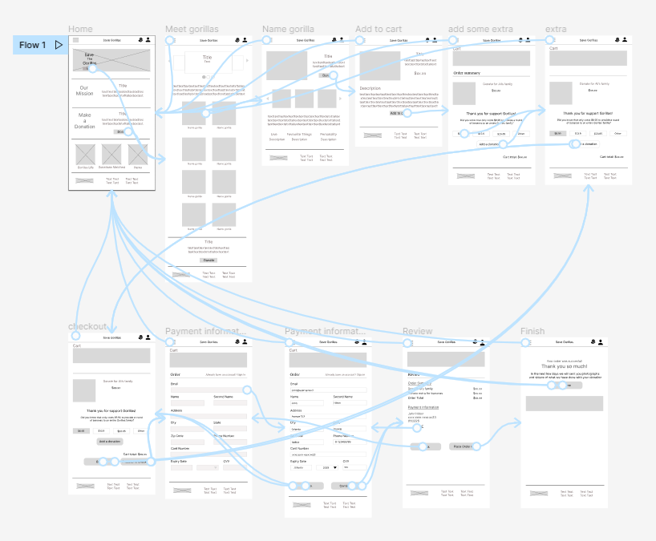

It's very difficult to find a unique design on skateboards and shops only sell standard colors.
To understand the user and create a product of them, I defined some responsibilites. Conducting interviews, paper and digital wireframing, low and high-fidelity prototyping, conducting usability studies, accounting for accessibility, and iterating on designs.
Design an efficient flow to order custom skateboards online.
May 2022 to June 2022
A friendly site that the user can create their own skateboard design.
UX designer covered the design process from beginning to end on my own.
I conducted interviews and created empathy maps to understand the users I'm designing for and their needs. A primary group identified through research was that users want a unique design to their skateboards because is part of their lives and stickers doesn't provide what they want to convey.
The user group confirmed that is frustrating not to be able to personalize something that is so essential in everyday life, they use it to go to school, work, parks, friend's houses, etc and “everyone use the typical black skateboard or designs that don't represent me”.
It's frustrating that are no platforms to design a complete skateboard, from model to wheels.
It's stressful and overwhelmed search several stores to make a skateboard by you own.
Online skateboards shopping websites don’t provide an engaging browser experience.
Problem statement: Rodrigo is a young student who needs a platform to design his own skateboard because it's important to feel identified with it.
After creating the competitive audit, ideation, paper and digital wireframes, I create a low fidelity prototype.
Unmoderated usability study
Chile, remote
7 participants
30-60 minutes